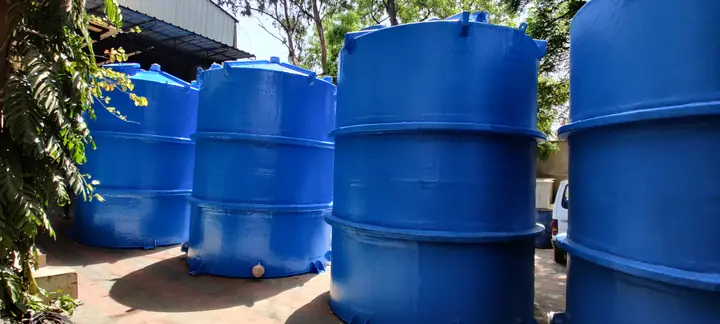
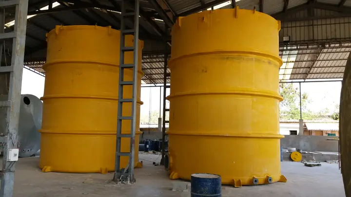
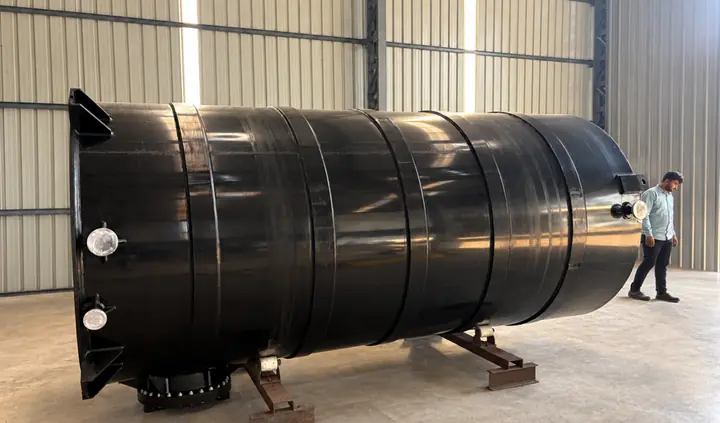

Scrubbing Systems
Wet scrubbers and packed columns that strip acid fumes and particles from exhaust, supplied turnkey with blowers, pumps, mist eliminators and ducting.
Explore the range →Creating shapes that matter.
Corrosion-resistant FRP and thermoplastic process equipment, welded to DVS standards in Ankleshwar, Gujarat.
Tanks, vessels, scrubbers and piping welded from engineering thermoplastics to DVS 2207–2208, on German Wegener & Widos equipment.
A thermoplastic liner for chemical resistance, wound with glass-fibre reinforced plastic for strength: light, strong equipment that lasts.
Wet scrubbers and packed columns that strip acid fumes and particles from exhaust, supplied turnkey with blowers, pumps, mist eliminators and ducting.
Explore the range →Filament-wound FRP and GRP tanks in polyester or vinyl ester resin: light, strong and corrosion-proof, for storage and process duty.
Explore the range →Welded thermoplastic tanks in the polymer that suits the chemical, from small day tanks to large vertical storage, round or rectangular.
Explore the range →Rectangular, ribbed PP tanks for pickling lines, where metal is immersed in acid to take off scale and rust.
Explore the range →Vessels for chemical reactions, designed for the dynamic and hydrostatic loads of the process and built in a material that stands up to the chemistry.
Explore the range →Receivers and traps built to hold full vacuum, and tanks for pressure duty, in the material your chemical needs.
Explore the range →Custom centrifugal blowers in PP and FRP for corrosive fumes and moist gases.
Explore the range →Chemical-free, skid-mounted sewage treatment with a small footprint and low running cost.
Explore the range →


Scrubbers and columns that remove particles and gases from exhaust, with the fans, mist eliminators and ducting to match.
Get a quote →
For liquids and gases in industrial service, entirely in FRP or thermoplastic, vertical or horizontal, indoors or out.
Get a quote →
Light, strong tanks in polyester or vinyl ester resin, alone or over a thermoplastic liner as dual laminate.
Get a quote →
Welded tanks in the polymer that suits the chemical, round or rectangular, to DVS 2207–2208.
Get a quote →
Rectangular, ribbed PP tanks for pickling, where metal is immersed in acid to take off scale and rust.
Get a quote →
For chemical reactions, designed for the dynamic and hydrostatic loads of the process.
Get a quote →
Vacuum traps built to hold full vacuum, and receivers for pressure duty.
Get a quote →
Custom blowers for corrosive fumes and moist gases.
Get a quote →
Non-metallic pipes, ducts and bends, assembled in-house to cut installation time. Piping work at site too.
Get a quote →
Chemical-free, non-biological treatment by electro-coagulation and ozone, skid-mounted.
Get a quote →Every job starts with the medium, the temperature and the pressure. We choose the thermoplastic, FRP or dual laminate that will last in that service.
We work from your drawings or make the design and fabrication drawings ourselves, sized for the dynamic and hydrostatic loads of the process.
Sheets are bent, rolled and joined in our Ankleshwar shop, welded to DVS 2207–2208 on German Wegener & Widos equipment, then fitted out and finished on the shop floor.
Every piece of equipment is checked and tested for the conditions it will face, and clients are welcome to inspect it with us before dispatch.
Finished equipment is secured and loaded at our works on NH 48, within easy reach of plants across western India and beyond.
Repeat orders from most of our clients are the best proof of the quality we deliver. See all clients →
Since 1992 we have designed, built, erected and commissioned process equipment for the chemical, pharmaceutical and water industries. Watch how far the tools, and the work, have come.
Every vessel is made in the thermoplastic or FRP that suits your medium, so it keeps working long after steel would have corroded away.
Joints welded to DVS standards on German Wegener & Widos machines, and fewer of them by design. Fewer joints, fewer weak points.
We design, fabricate, erect and commission the whole system ourselves, so nothing falls between contractors.
Corrosion-resistant equipment built in Ankleshwar since 1992, for the chemical, pharma and water industries.
Tell us what you need to store, scrub or move, and the chemical involved. We'll come back with our best price.